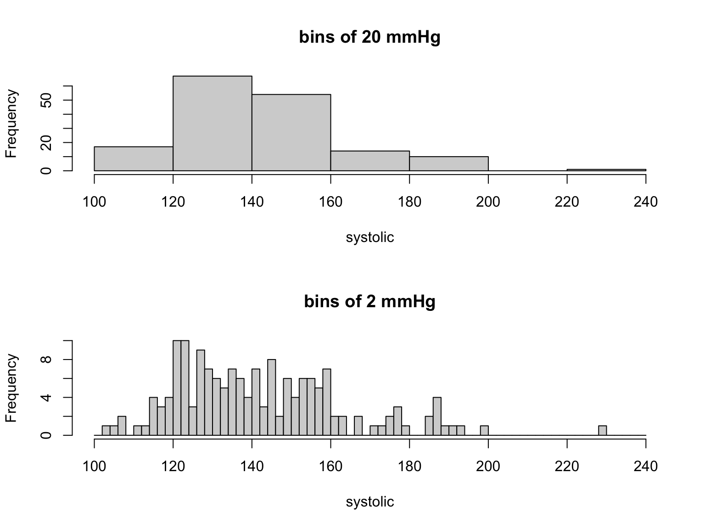
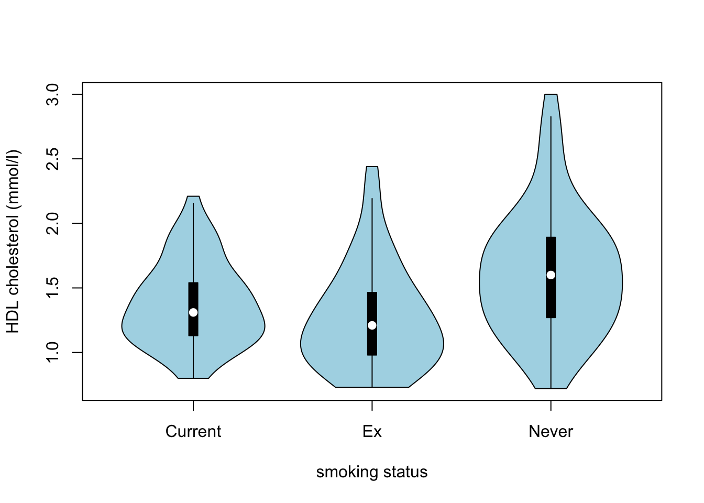
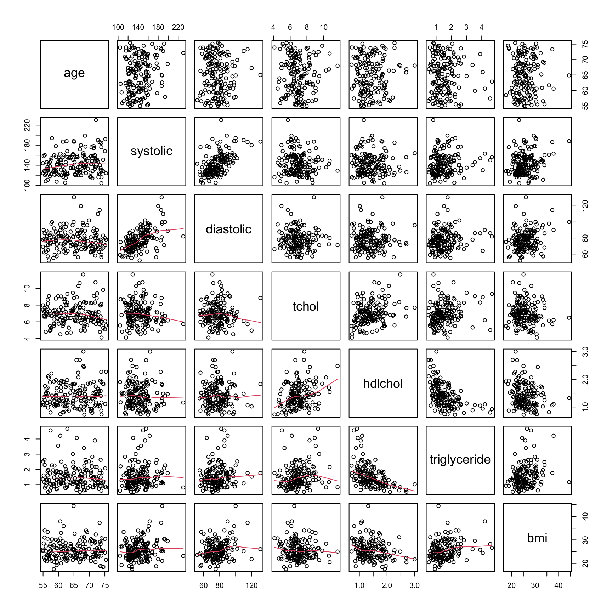

Exercises
Exercise 5: Exploratory analysis and graphics
Read Chapter 4 to help you complete the questions in this exercise.
1. As in previous exercises, either create a new R script or continue
with your previous R script in your RStudio Project. Again, make sure
you include any metadata you feel is appropriate (title, description of
task, date of creation etc) and don’t forget to comment out your
metadata with a # at the beginning of the line.
2. You do not need to download anything for this exercise. You
already have ‘cardiacdata.txt’ in the data
directory of your RStudio Project, from Exercise 3. If for some reason
you haven’t, go back to the Data link,
download ‘cardiacdata.xlsx’ and save it as a tab delimited file
called ‘cardiacdata.txt’ as you did before.
3. A quick reminder of what these data are. They come from a cohort study of the risk factors for cardiovascular disease, in which 163 adults aged between 55 and 75 were examined and a range of measurements taken: age and sex, systolic and diastolic blood pressure (mmHg), body mass index (kg m-2), total cholesterol, HDL cholesterol and triglyceride (all mmol l-1), units of alcohol drunk in the previous week, and smoking status. Note that you are importing the original file again, not the cleaned version you exported at the end of Exercise 4. Starting from the raw data every time, and doing your cleaning in a script, is what makes an analysis reproducible.
4. Import the ‘cardiacdata.txt’ file into R using the
read.table() function and assign it to a variable named
cardiac. Use the str() function to display the
structure of the dataset. As you found in Exercise 3, the
sex and smoking variables are coded as
integers, but they are really categories. Create a new variable in the
cardiac dataframe for each of them, recoded as a factor
with meaningful labels (sex is 1 for Female and 2 for Male;
smoking is 1 for Current, 2 for Ex and 3 for Never). Use
the str() function again to check the coding of these new
variables. Almost every plotting function in this exercise treats a
factor differently from a number, so this step is not optional
housekeeping - get it wrong and your boxplots will come out as
nonsense.
cardiac <- read.table('data/cardiacdata.txt', header = TRUE, sep = "\t", stringsAsFactors = TRUE)
str(cardiac)
# recode the two categorical variables as factors, keeping the originals
cardiac$Fsex <- factor(cardiac$sex, levels = c(1, 2),
labels = c("Female", "Male"))
cardiac$Fsmoking <- factor(cardiac$smoking, levels = c(1, 2, 3),
labels = c("Current", "Ex", "Never"))
str(cardiac)
# $ Fsex : Factor w/ 2 levels "Female","Male": 2 2 2 2 2 2 2 1 1 2 ...
# $ Fsmoking: Factor w/ 3 levels "Current","Ex",..: NA NA NA NA NA NA NA 1 1 1 ...## 'data.frame': 163 obs. of 11 variables:
## $ patno : Factor w/ 163 levels "0049B","0052H",..: 6 54 65 69 101 115 116 2 3 4 ...
## $ age : num 71 68.2 62.9 69.9 65 ...
## $ sex : int 2 2 2 2 2 2 2 1 1 2 ...
## $ systolic : int 142 140 156 154 187 123 147 140 131 128 ...
## $ diastolic : int 63 78 82 102 131 63 66 67 73 62 ...
## $ tchol : num 7.03 5.32 9.34 7.19 8.84 6.17 6.2 6.96 7.02 7.21 ...
## $ hdlchol : num 1.4 0.88 0.92 1.31 1.83 1.58 1.65 1.68 1.57 1.08 ...
## $ triglyceride: num 0.81 3.4 4.67 2.53 1.76 0.73 1.11 0.69 1.29 1.16 ...
## $ bmi : num 24.7 26 26.6 26.2 26.1 ...
## $ alcohol : int 9 2 7 24 14 8 0 2 0 0 ...
## $ smoking : int NA NA NA NA NA NA NA 1 1 1 ...
## 'data.frame': 163 obs. of 13 variables:
## $ patno : Factor w/ 163 levels "0049B","0052H",..: 6 54 65 69 101 115 116 2 3 4 ...
## $ age : num 71 68.2 62.9 69.9 65 ...
## $ sex : int 2 2 2 2 2 2 2 1 1 2 ...
## $ systolic : int 142 140 156 154 187 123 147 140 131 128 ...
## $ diastolic : int 63 78 82 102 131 63 66 67 73 62 ...
## $ tchol : num 7.03 5.32 9.34 7.19 8.84 6.17 6.2 6.96 7.02 7.21 ...
## $ hdlchol : num 1.4 0.88 0.92 1.31 1.83 1.58 1.65 1.68 1.57 1.08 ...
## $ triglyceride: num 0.81 3.4 4.67 2.53 1.76 0.73 1.11 0.69 1.29 1.16 ...
## $ bmi : num 24.7 26 26.6 26.2 26.1 ...
## $ alcohol : int 9 2 7 24 14 8 0 2 0 0 ...
## $ smoking : int NA NA NA NA NA NA NA 1 1 1 ...
## $ Fsex : Factor w/ 2 levels "Female","Male": 2 2 2 2 2 2 2 1 1 2 ...
## $ Fsmoking : Factor w/ 3 levels "Current","Ex",..: NA NA NA NA NA NA NA 1 1 1 ...
5. How many patients are there in each combination of smoking status
and sex (hint: remember the table() function?)? Don’t
forget to use the factor recoded versions of these variables. Is the
split between the smoking categories similar for women and men? Are any
of the combinations small enough to worry about if you wanted to compare
them? Finally, run the table again with the argument
useNA = "ifany" so that the patients with no recorded
smoking status appear as a row of their own. How many are there, and is
there anything they have in common?
table(cardiac$Fsmoking, cardiac$Fsex)
# Female Male
# Current 26 24
# Ex 15 37
# Never 37 17
# the pattern is almost reversed between the sexes: most of the men are
# ex-smokers, most of the women have never smoked. The smallest cell has 15
# patients, which is small but not unusable.
table(cardiac$Fsmoking, cardiac$Fsex, useNA = "ifany")
# Female Male
# Current 26 24
# Ex 15 37
# Never 37 17
# <NA> 0 7
# all 7 of the patients with no smoking status are men, and not one is a
# woman. Missing values spread evenly through a dataset are a nuisance;
# missing values concentrated in one group are a bias, because every analysis
# that quietly drops them drops men only. You cannot tell which you have
# without looking, and `useNA = "ifany"` is how you look.##
## Female Male
## Current 26 24
## Ex 15 37
## Never 37 17
##
## Female Male
## Current 26 24
## Ex 15 37
## Never 37 17
## <NA> 0 7
6. The humble cleveland dotplot is a great way of identifying if you
have potential outliers in continuous variables (see Section
4.2.4). Create dotplots (using the dotchart() function)
for the following variables; bmi, systolic,
tchol and alcohol. Do these variables contain
any unusually large or small observations? Don’t forget, if you prefer
to create a single figure with all 4 plots you can always split your
plotting device into 2 rows and 2 columns (see Section 4.4
of the book).
par(mfrow = c(2, 2))
dotchart(cardiac$bmi, main = "bmi")
dotchart(cardiac$systolic, main = "systolic")
dotchart(cardiac$tchol, main = "total cholesterol")
dotchart(cardiac$alcohol, main = "alcohol")
# the bmi plot is the striking one: a single point sits so far to the right
# that every other patient is squashed into a narrow strip on the left. You
# cannot see the shape of the bmi distribution at all, because one value is
# setting the scale for all 163.
7. You met that extreme bmi value in Exercise 4, when
you checked the ranges with summary() and found a maximum
of 514.60. A body mass index of 514 is not possible: it is 51.46 with
the decimal point in the wrong place. What the dotplot adds is not the
discovery, but the damage. One bad value has made the plot useless for
looking at the other 162 patients.
Remember that you imported the raw file again in Q4, so none of the
cleaning you did in Exercise 4 is in this dataframe. Redo all three of
those fixes now. Use the which() function to identify which
observation the impossible bmi is, confirm the value with
the square bracket [ ] notation, then set that
bmi, the single triglyceride of 0 and the two
hdlchol values of 0 to NA, exactly as you did
in Exercise 4. Redraw the bmi dotchart. Now look again at
all four plots from Q6. Several points still sit well away from the
rest. Which ones, and what should you do about them?
which(cardiac$bmi > 100)
cardiac$bmi[161]
# the same three fixes you made in Exercise 4 Q1. Your cleaning lives in your
# script, not in the data file, so it has to run again every time you import
# the raw data. That is exactly what makes it reproducible, and it is the
# reason for writing it down rather than editing the spreadsheet.
cardiac$bmi[cardiac$bmi > 100] <- NA
cardiac$triglyceride[cardiac$triglyceride == 0] <- NA
cardiac$hdlchol[cardiac$hdlchol == 0] <- NA
dotchart(cardiac$bmi, main = "bmi")
# Now the bmi plot is readable, and you can see the distribution properly:
# most patients between about 20 and 30, thinning out to four patients above
# 35, the largest of them at 44.44.
# What else stands out? One patient with a bmi of 44.44, one with a systolic
# pressure of 230 mmHg, and in the alcohol plot a handful of patients reporting
# 41, 64 and 82 units in a week when the median is 2.
# What should you do about them? NOTHING. Every one of those values is
# perfectly possible. A BMI of 44 is severe obesity, a systolic pressure of 230
# is a hypertensive crisis, and 82 units a week is a great deal of alcohol but
# people really do drink that much. These are not errors, they are patients.
# The difference between this question and the last one is the difference
# between a value that CANNOT be right and a value you did not expect, and only
# the first of those is yours to change. Deleting inconvenient data because it
# looks untidy is scientific fraud.## [1] 161
## [1] 514.6
8. Histograms are the standard way of looking at the distribution of
a continuous variable (see Section
4.2.2). Create histograms for bmi and
alcohol, either separately or in one figure as you did in
Q6. The two shapes could hardly be less alike, and it is worth taking a
moment to say how they differ.
One thing to be careful of is that a histogram can look quite
different depending on the number of ‘breaks’ used. The
hist() function chooses breaks for you, but they are only a
suggestion. Redraw the histogram of systolic twice, once
with wide bins and once with narrow ones, and compare them. Which one
would you show somebody, and what does the difference tell you about how
much you should trust the shape of a histogram?
par(mfrow = c(1, 2))
hist(cardiac$bmi, main = "", xlab = "bmi")
hist(cardiac$alcohol, main = "", xlab = "alcohol (units/week)")
# bmi is roughly symmetric, a recognisable hump with a modest tail to the
# right. alcohol is nothing of the sort: a huge spike at zero and a long thin
# tail stretching out to 82 units. Hold on to that difference, you come back
# to it in Q10.
# wide bins and narrow bins, drawn from exactly the same 163 numbers
par(mfrow = c(2, 1))
hist(cardiac$systolic, xlab = "systolic", main = "bins of 20 mmHg",
breaks = seq(from = 100, to = 240, by = 20))
hist(cardiac$systolic, xlab = "systolic", main = "bins of 2 mmHg",
breaks = seq(from = 100, to = 240, by = 2))
# with 20 mmHg bins the distribution looks smooth and roughly symmetric; with
# 2 mmHg bins it looks spiky and full of gaps. Nothing about the patients has
# changed, only the picture. The 2 mmHg version cuts 163 patients into 70 bins,
# so a typical bin holds two people and one patient either way visibly changes
# its height. Narrow bins do not show you more detail, they show you noise.
# Treat the shape of a histogram as a rough guide, not as evidence.

9. Scatterplots are great for visualising relationships between two continuous variables (Section 4.2.1). Before you draw one, decide which variable belongs on which axis. By convention the explanatory variable goes on the x axis and the response goes on the y axis, so the choice is not cosmetic.
Start with bmi and systolic blood pressure.
Which is the explanatory variable, and which the response? Plot them the
right way round. Now do the same for hdlchol and
triglyceride. Is the choice as easy this time?
par(mfrow = c(1, 2))
# Easy one. Carrying more weight raises blood pressure, not the other way round,
# so bmi is explanatory and goes on x. The relationship is real but weak, which
# is normal.
plot(cardiac$bmi, cardiac$systolic,
xlab = "bmi", ylab = "systolic (mmHg)")
# Harder one. Neither clearly causes the other; both are markers of the same
# underlying metabolic state. If you have to choose, a raised triglyceride is
# usually taken to drive HDL down rather than the reverse, so triglyceride goes
# on x. The relationship is negative.
plot(cardiac$triglyceride, cardiac$hdlchol,
xlab = "triglyceride (mmol/l)", ylab = "HDL cholesterol (mmol/l)")
10. Now back to alcohol, which your histogram in Q8
showed to be badly skewed. Skew is a nuisance in a plot because most of
the points end up squashed into a corner. In Exercise 4 Q6 you took logs
of triglyceride and it worked nicely. Try two
transformations here, a square root with sqrt() and a
natural log with log(), storing each as a new variable in
the dataframe, then plot histograms of alcohol alongside
both. One of the two goes badly wrong. Which one, and why? (hint: what
is the smallest value of alcohol?)
cardiac$alcohol_sqrt <- sqrt(cardiac$alcohol)
cardiac$alcohol_log <- log(cardiac$alcohol)
par(mfrow = c(1, 3))
hist(cardiac$alcohol, main = "untransformed", xlab = "alcohol")
hist(cardiac$alcohol_sqrt, main = "square root", xlab = "sqrt(alcohol)")
hist(cardiac$alcohol_log, main = "natural log", xlab = "log(alcohol)")
sum(cardiac$alcohol == 0) # 58
# The log fails. 58 of the 163 patients reported drinking no alcohol at all, and
# log(0) is -Inf, so R quietly drops more than a third of your data from the
# plot with nothing more than a warning. The square root works, because sqrt(0)
# is 0, and it pulls the long tail in nicely.
# Triglyceride logged cleanly in Exercise 4 only because you had already set
# its one zero to NA in Q1 of that exercise, and you did the same again in Q7
# above. The zeros in alcohol are quite different: they are real, and they are
# more than a third of the patients, so there is nothing to set to NA. Check
# the minimum before you take the log of anything.## [1] 58
11. When visualising differences in a continuous variable between levels of a factor (categorical variable) then a boxplot is your friend (avoid using bar plots - Google ‘bar plots are evil’ for more info). Create a boxplot to visualise the differences in HDL cholesterol at each level of smoking status (don’t forget to use the recoded version of this variable you created in Q4). Include x and y axis labels in your plot. Make sure you understand the anatomy of a boxplot before moving on - please ask if you’re not sure (also see Section 4.2.3 of the book).
Now draw exactly the same plot for total cholesterol instead. Same patients, same factor, one line of code different, and the two figures do not say remotely the same thing. Which of the two shows a difference between the groups? And if you were writing this up, which would you be tempted to leave out?
An alternative to the boxplot is the violin plot, which combines a
boxplot with a kernel density
plot and shows you the shape of the distribution rather than just
its quartiles. You will first need to install the vioplot
package from CRAN and make it available with
library(vioplot). The vioplot() function then
works in much the same way as boxplot(). Draw the HDL
comparison again as a violin plot and compare the two.
One last thing. Every plot in this exercise has gone to the RStudio
plot pane, which is fine while you are exploring but no use at all when
you need a figure in a document. To get a plot out of R you send it to a
file instead, by opening a graphics device with pdf() or
png(), drawing the plot as usual, and closing the device
with dev.off(). You will do this properly in Exercise 6, so
there is nothing to do here beyond knowing that it is coming.
# note: Fsmoking is the recoded smoking variable created in Q4
boxplot(hdlchol ~ Fsmoking, data = cardiac,
xlab = "smoking status", ylab = "HDL cholesterol (mmol/l)")
boxplot(tchol ~ Fsmoking, data = cardiac,
xlab = "smoking status", ylab = "total cholesterol (mmol/l)")
# HDL is the one with something in it. The never-smokers sit clearly above the
# other two, with a median of 1.60 against 1.31 for current smokers and 1.21
# for ex-smokers, and their median is above the upper quartile of both other
# groups. Total cholesterol shows nothing at all: three boxes at much the same
# height, medians of 6.91, 6.58 and 7.03.
# Which would you leave out? The honest answer is that the temptation is to
# report the HDL plot and let the cholesterol one quietly disappear. Do not.
# A plot that shows you there is nothing to see has still told you something,
# and keeping only the comparisons that worked is how a set of results stops
# being evidence.
# violin plot. install.packages("vioplot") first if you have not already
library(vioplot)
vioplot(hdlchol ~ Fsmoking, data = cardiac, xlab = "smoking status",
ylab = "HDL cholesterol (mmol/l)", col = "lightblue")
# the boxplot gives you the quartiles, the violin gives you the shape as well.
# Here they agree, which is reassuring rather than dull: it means the medians
# are not being propped up by one odd cluster of patients.


12. To explore the relationships between several continuous variables
at once it’s hard to beat a pairs plot. Create a pairs plot for the
variables; age, systolic,
diastolic, tchol, hdlchol,
triglyceride and bmi (see Section
4.2.5 of the book for more details). If it looks a little cramped in
RStudio then click on the ‘zoom’ button in the plot viewer to see a
larger version.
One of the useful things about pairs() is that you can
choose what goes into each panel. Modify your plot to add a smoother (a
wiggly line) to the lower triangle, which makes the shape of each
relationship much easier to see. The book and ?pairs show
you how. Then, just by looking, which pair of variables is most strongly
related, and which variable is related to almost nothing?
plot_vars <- c("age", "systolic", "diastolic", "tchol", "hdlchol", "triglyceride",
"bmi")
# vanilla pairs plot
pairs(cardiac[, plot_vars])
# panel.smooth adds the wiggly line. Note that it keeps its dot: it is a base R
# function, not something you wrote
pairs(cardiac[, plot_vars], lower.panel = panel.smooth)
# systolic and diastolic are the most strongly related pair, which is no
# surprise given that they are the same measurement taken at two points in the
# heartbeat. hdlchol against triglyceride is the next most obvious, sloping the
# other way. age is related to almost nothing here, and that is worth thinking
# about: everyone in this study is between 55 and 75, so there simply is not
# enough spread in age for a relationship to show itself. A variable can look
# unimportant purely because of who was recruited.

13. (optional, and a stretch) pairs() will put whatever
you like in the upper triangle, including the correlation coefficients
themselves, but there is no ready made function for it so you have to
write one. This is a step beyond anything else in the exercise, and
writing your own functions is not covered until the optional programming
exercise, so treat it as a look ahead rather than something you are
expected to manage now. If you fancy a go, ?pairs has an
example you can adapt. Do the numbers agree with what you concluded by
eye?
panel_cor <- function(x, y, digits = 2, ...) {
usr <- par("usr")
on.exit(par(usr = usr))
par(usr = c(0, 1, 0, 1))
r <- cor(x, y, use = "pairwise.complete.obs")
text(0.5, 0.5, format(r, digits = digits), cex = 1.4)
}
pairs(cardiac[, plot_vars], upper.panel = panel_cor, lower.panel = panel.smooth)
# systolic with diastolic is the strongest at r = 0.56, hdlchol with
# triglyceride the next at r = -0.51, and age never gets above 0.21 with
# anything. The eye had it right.
# That -0.51 is worth a second look. Before the cleaning in Q7 it was -0.43,
# and the whole of the difference is two patients recorded with an HDL of zero.
# Two impossible values out of 163 moved a correlation by 0.08.
End of Exercise 5